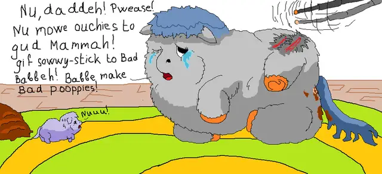

|
Aqui encontraras las creaciones!! tanto audiovisuales como en formato físico (dibujos, canciones, videojuegos, libros, juguetes, etc.) Son muchas las cosas que toda una comunidad unida en su momento pudo lograr, Asique les mostraremos algunas de esas producciones, divididas en secciones |

|

|
Menciones especiales aqui abajo!!! |
  Fluffy Pony es un Fandom surgido de My Little Pony y 4chan. Comenzando con el concepto simple de "ponys esponjosos”, rápidamente ganó un universo comunitario. A continuacion, les dejamos la Comunidad Fluffy para que la vean!! |
 Ponify o Rule85, llegan a ser dos cosas similaresya que en el caso de la regla quiere decir que todo lo que existe tiene su versión pony mientras que ponify se le llaman a los trabajos de los fanes en dibujos o animaciones de cualquier otra serie o personajes, pero en caballitos al estilo de la serie. |